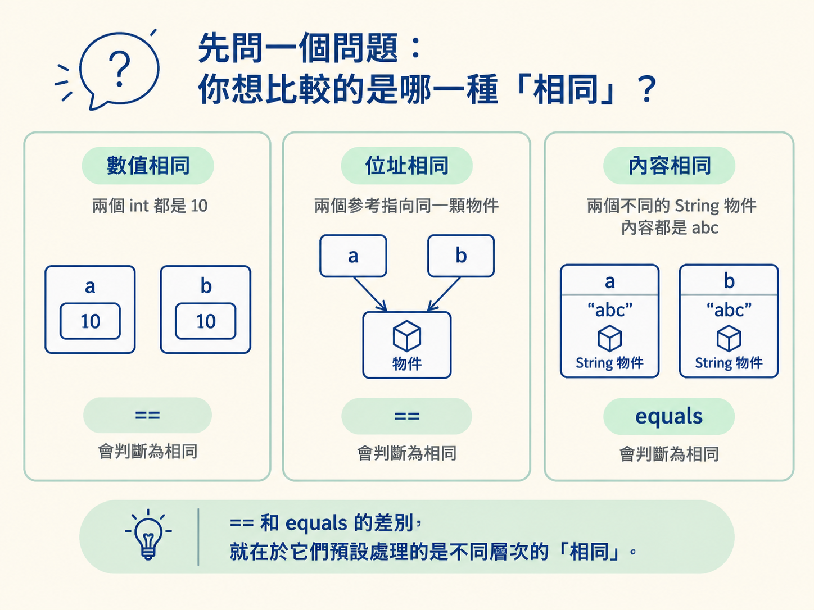
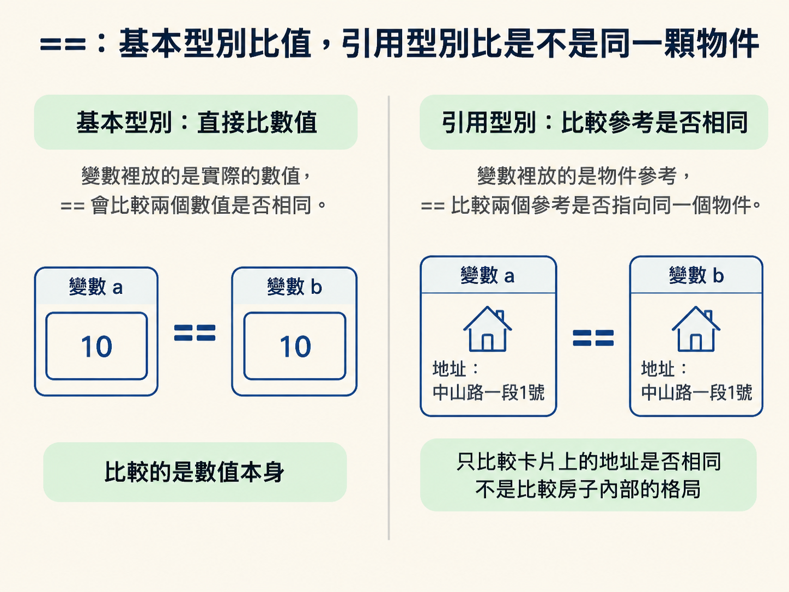

==、equals 與 hashCode：先搞懂「相等」是哪一種你可能遇過這種線上事故：Student 物件明明已經放進 HashSet，下一秒卻用一個學號相同的新物件呼叫 contains，結果得到 false。更奇怪的是，集合裡還可能出現兩筆你以為是同一位學生的資料。
另一個場景是金額比較。前端傳來 "100"，後端拿到的是 "100.00"。如果直接用 equals 比對，數學上看似相同的金額，程式卻可能判定不相等，導致優惠券沒有發出去。
這些問題的共同根源，是我們把不同層次的「相等」混在一起了。本節會從 ==、equals 和 hashCode 開始，拆開數值、位址與內容這三種判斷方式，也會說明為什麼 BigDecimal 的金額比較不能隨手使用 equals。
== 比的是數值或位址== 是運算子，實際比較什麼，取決於兩邊的型別。
如果兩邊都是基本型別，== 比的是數值，所以 10 == 10.0 會得到 true。
如果兩邊是引用型別，== 比的是位址是否指向同一個物件。可以把它想成兩把鑰匙：只有兩把鑰匙真的開同一扇門，== 才會認為它們相等。即使兩個物件的內容完全一樣，只要是堆上的兩個獨立物件，結果仍然可能是 false。

Object.equals 預設仍然是 ==equals() 是 Object 定義的方法。若類別沒有自行重寫它，預設行為就是比較兩個引用是否指向同一個物件。換句話說，沒有重寫 equals 時，s1.equals(s2) 和 s1 == s2 的效果基本相同，仍然是在比位址。
equals 真正有用的地方，在於類別可以重寫它，改成比較物件的邏輯內容。例如 String 和 Integer 都已經重寫 equals，業務上的值物件通常也會根據自己的規則重寫它。
String a = new String("hello");
String b = new String("hello");
System.out.println(a == b); // false：兩個不同的堆物件
System.out.println(a.equals(b)); // true：String 重寫了 equals，比字元內容這段程式裡，a 和 b 是兩個不同的物件，所以 == 回傳 false。但它們包含相同的字元內容，String 的 equals 因此回傳 true。
hashCode當 equals 被重寫成比較內容後，還不能立刻說大功告成。只要物件會放進 HashMap 或 HashSet，就必須同時理解 hashCode()。
可以把 HashMap 想成一座檔案館。hashCode() 先決定資料要放進第幾號櫃子；找到櫃子後，equals() 才會逐一比對裡面的檔案，確認哪一份才是目標。
因此，兩個方法要遵守一條重要契約：
如果a.equals(b)為 true，那麼a.hashCode()必須等於b.hashCode()。反過來，hashCode相同時，equals不一定為 true，這叫做哈希衝突。
為什麼契約這麼重要？假設兩個物件在邏輯上相等，卻算出不同的雜湊值。資料存入時可能被放進 A 櫃，查詢時卻依照另一個物件的雜湊值跑到 B 櫃，自然就找不到。
Object 預設提供的 hashCode 是以物件身分為基礎計算的。因此，即使兩個 new 出來的物件內容相同，只要是不同實例，預設的雜湊值也可能不同。
equals，不重寫 hashCode 的後果回到一開始的 Student。假設你建立了兩個學號相同的物件，並讓 s1.equals(s2) 回傳 true，但沒有同步重寫 hashCode。
s1 存進 HashMap。Map 根據 s1 的預設雜湊值，把資料放進某個櫃子。s2 查詢。Map 根據另一個預設雜湊值，可能前往不同的櫃子，結果拿到 null。HashSet 來說，兩個物件也可能被分到不同位置，於是原本應該被視為同一筆資料的學生，最後被存成兩筆。正確做法是：重寫 equals 時，也要用同一組業務關鍵欄位重寫 hashCode。如果學生的唯一識別是 id，兩個方法就都只使用 id。現代 IDE，以及 record 型別，通常都能協助產生這一對方法，目的就是降低破壞契約的機會。
@Override
public boolean equals(Object o) {
if (this == o) return true;
if (!(o instanceof Student s)) return false;
return id == s.id; // 只用 id 判斷
}
@Override
public int hashCode() {
return Integer.hashCode(id); // 也只用 id 算雜湊，契約才一致
}equals 可能讓你判錯？小數是等值判斷裡很容易踩到的坑。計算機底層使用二進位儲存數字，整數通常可以精確表示，但像 0.1 這類小數在二進位中是無限循環小數。由於 float 和 double 的儲存空間有限，只能保存近似值。
因此，0.1 + 0.2 可能不會得到精確的 0.3，而是出現 0.30000000000000004。在金額計算中，這種誤差可能讓帳務無法對平，所以不能把 double 當成金額的可靠表示方式。
金額通常應該使用 BigDecimal。不過，BigDecimal 還有一個常見考點：它的 equals 不只比較數值，也會比較精度，也就是 scale。
BigDecimal a = new BigDecimal("1.0");
BigDecimal b = new BigDecimal("1.00");
System.out.println(a.equals(b)); // false！scale 不同（1 vs 2）
System.out.println(a.compareTo(b) == 0); // true：compareTo 只比數值1.0 和 1.00 的數學大小相同，但它們的 scale 不同，所以 equals 會回傳 false。如果你的需求是判斷兩個 BigDecimal 的數值是否相等，應該使用 compareTo() == 0。

建立 BigDecimal 時，也要避免直接把 double 傳進建構子。請使用 new BigDecimal("0.1") 這種字串建構子，或使用 BigDecimal.valueOf(0.1)。如果直接使用 new BigDecimal(0.1)，原本 double 裡的不精確近似值也會一起被帶進去。
| 層次 | 比較什麼 | 該用什麼 |
|---|---|---|
| 數值 | 兩個基本型別的數字是否相同 | == |
| 位址 | 兩個引用是否指向同一個物件 | == |
| 內容 | 兩個物件的邏輯狀態是否相等 | 重寫 equals，並同步重寫 hashCode |
| 金額數值 | 兩個 BigDecimal 的數學大小 | compareTo() == 0 |